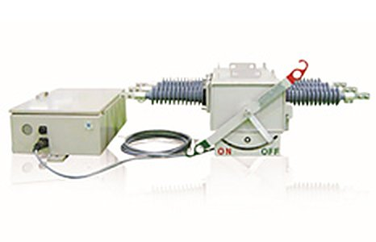

제품 선정 상담
설치 환경과 용도에 맞는 제품군을 안내합니다.

제품명, 설치 환경과 문의 내용을 알려주시면 담당 부서에서 확인합니다.
설치 환경과 용도에 맞는 제품군을 안내합니다.
제품 규격과 기술자료 관련 문의를 접수합니다.
제품명과 설치 위치, 현장 상황을 바탕으로 담당자를 연결합니다.
제품 라벨과 증상 정보를 준비한 뒤 전화로 접수해 주세요.
제품명과 현장 정보를 전달합니다.
제품과 문의 유형에 맞는 담당자가 내용을 검토합니다.
필요한 자료 또는 후속 조치 방법을 안내합니다.